Barcelona vibra diferente
Tapas, architecture de Gaudí, plages méditerranéennes et énergie catalane.
Le métro permet de rejoindre rapidement les plages et les quartiers iconiques.
Barceloneta et les plages catalanes offrent une ambiance unique en Europe.
Découvre les meilleures adresses et rooftops de Barcelone.
Le FC Barcelone et les grands événements rythment la ville toute l’année.
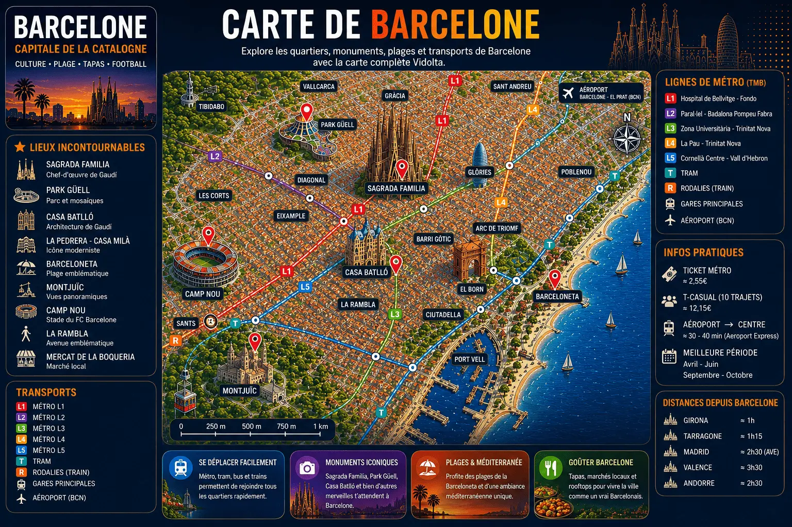
Entre chefs-d'œuvre de Gaudí, excursions en Catalogne et croisières sur la Méditerranée, Barcelone propose des expériences uniques pour découvrir la ville sous tous ses angles.
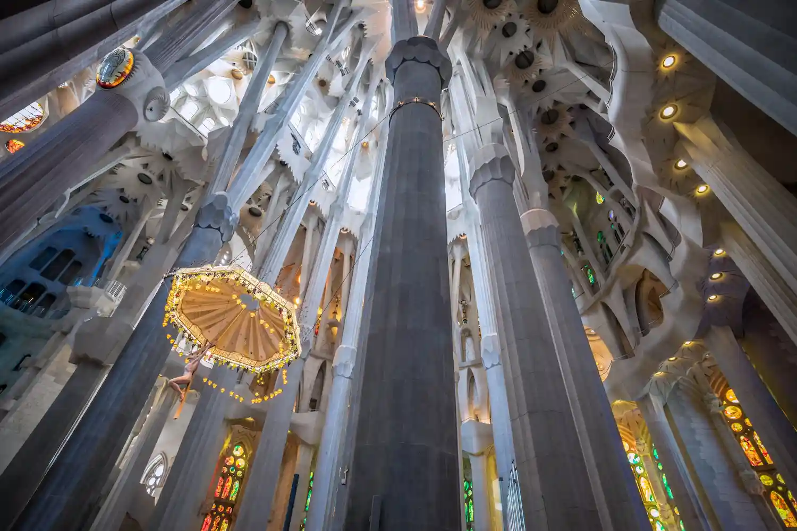
Découvre l'œuvre la plus emblématique de Gaudí avec une visite permettant d'explorer son architecture spectaculaire et ses célèbres vitraux.
Réserver la visite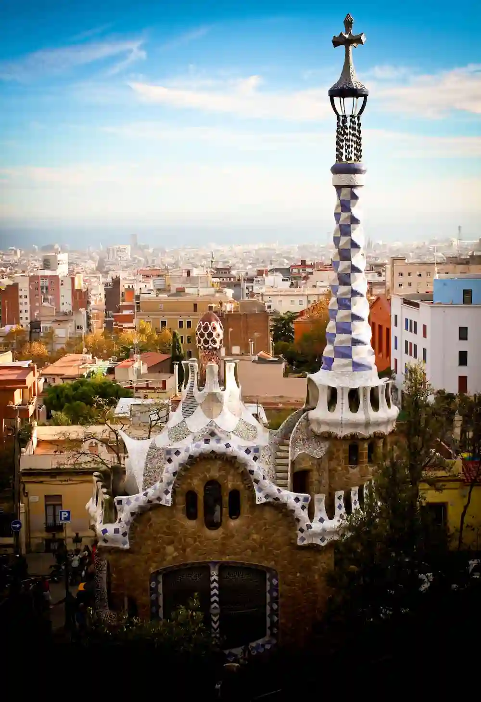
Promène-toi dans l'univers créatif de Gaudí à travers mosaïques colorées, jardins et panoramas sur Barcelone.
Réserver l'entrée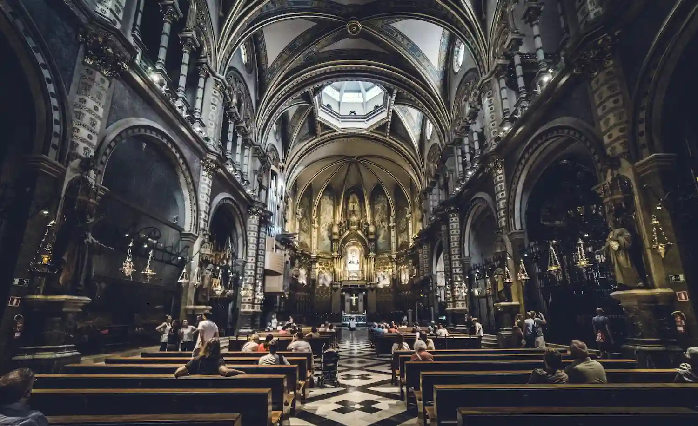
Découvre le célèbre monastère de Montserrat et admire certains des plus beaux paysages de Catalogne lors d'une excursion depuis Barcelone.
Réserver l'excursion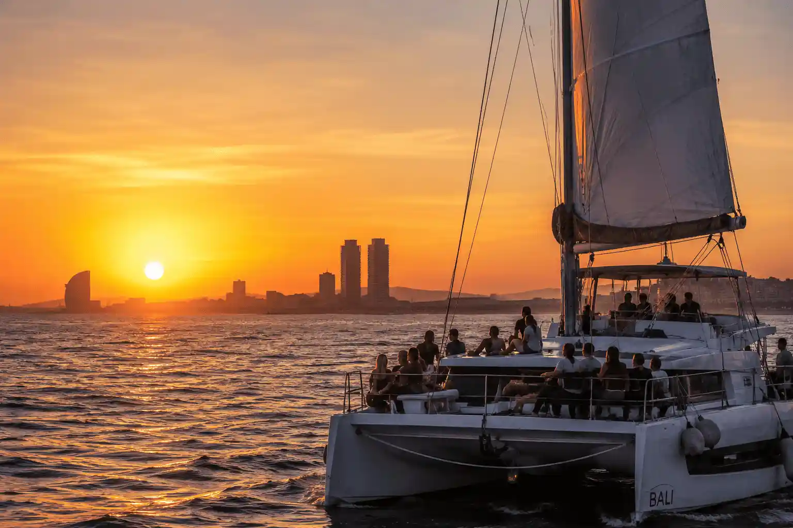
Profite d'une sortie en mer pour admirer Barcelone depuis la Méditerranée lorsque la ville commence à s'illuminer.
Réserver la croisièreEntre métro moderne, pistes cyclables, pass transports et excursions dans toute la Catalogne, Barcelone se découvre facilement sans voiture.
Le métro de Barcelone permet de rejoindre rapidement la Sagrada Família, le Camp Nou, Barceloneta, le Quartier Gothique et les principaux sites touristiques de la ville.
Site officielGrâce à ses nombreuses pistes cyclables et à son front de mer, Barcelone est l'une des villes les plus agréables d'Europe à explorer à vélo.
Louer un vélo électriqueVoyage librement dans Barcelone grâce à la carte Hola Barcelona incluant métro, bus, tramway et trains reliant l'aéroport au centre-ville.
Découvrir la carteDepuis Barcelone, rejoins facilement les plus belles destinations de Catalogne grâce aux trains régionaux et aux excursions organisées.
Site officielEntre les ruelles historiques du Quartier Gothique, les élégantes avenues de l'Eixample et l'ambiance méditerranéenne de Barceloneta, chaque quartier offre une expérience différente pour découvrir Barcelone.
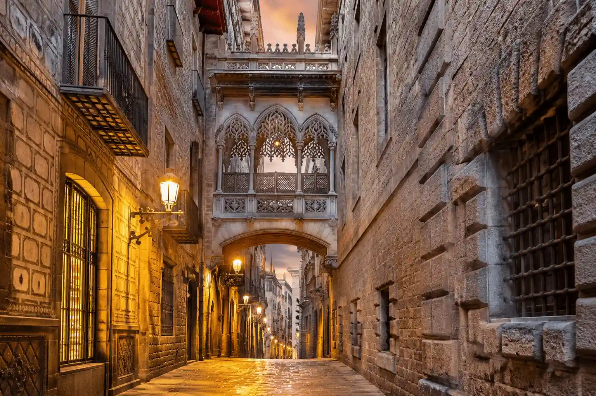
Le meilleur choix pour une première visite. Tu séjournes au cœur du centre historique, à proximité des monuments, des places animées et des principales attractions.
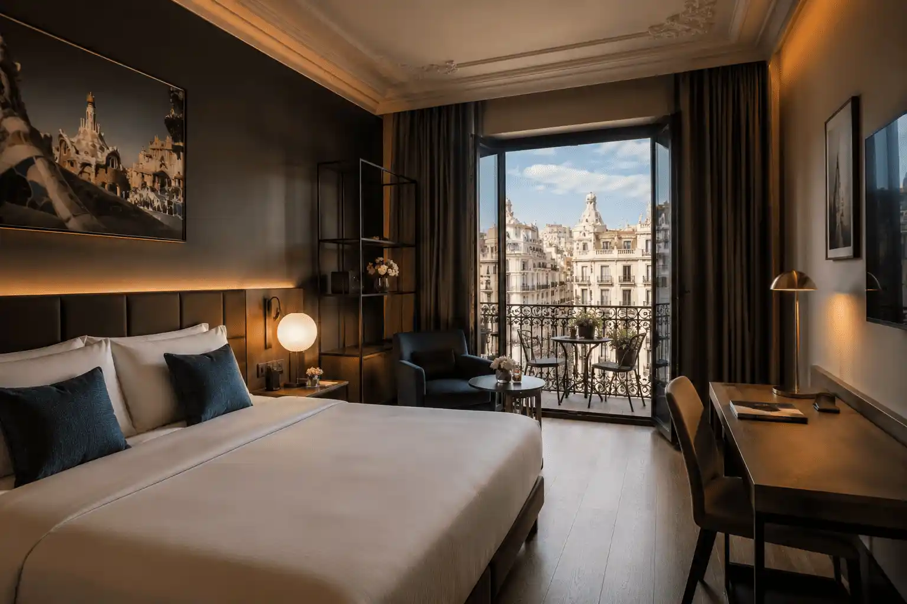
Quartier élégant et central connu pour ses larges avenues, ses bâtiments modernistes et sa proximité avec la Sagrada Família et le Passeig de Gràcia.
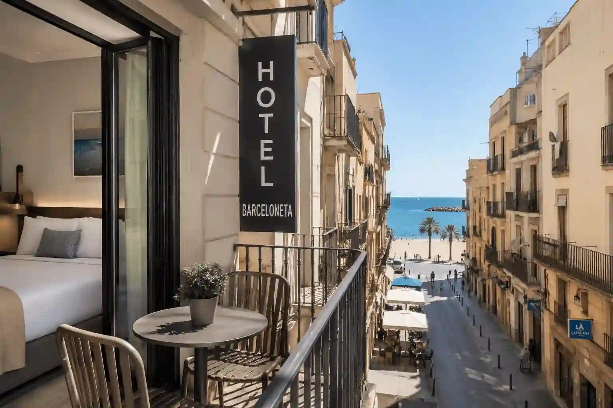
Idéal pour profiter de la plage, de la promenade maritime et des couchers de soleil sur la Méditerranée tout en restant proche du centre-ville.
Entre tapas traditionnelles, terrasses avec vue sur la Méditerranée et restaurants emblématiques, Barcelone fait partie des destinations gastronomiques les plus appréciées d'Europe.
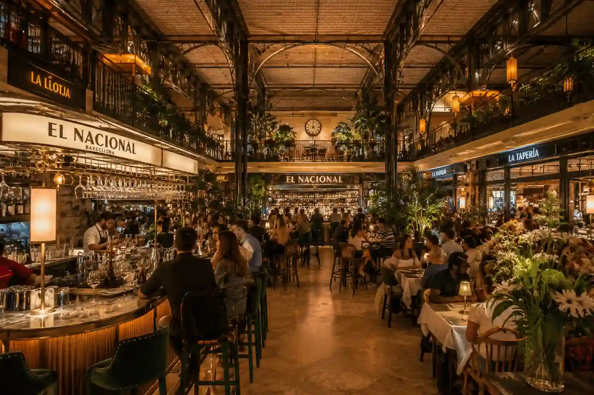
Situé sur le Passeig de Gràcia, El Nacional rassemble plusieurs espaces gastronomiques dans un lieu spectaculaire inspiré de l'architecture moderniste catalane.
Découvrir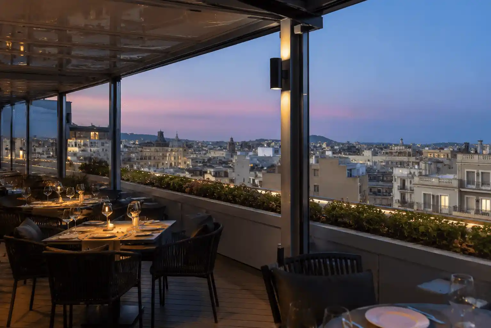
Située sur la terrasse de l’hôtel Claris, cette adresse offre une vue panoramique sur Barcelone et une cuisine méditerranéenne raffinée. L’endroit idéal pour un dîner romantique à Barcelone.
Réserver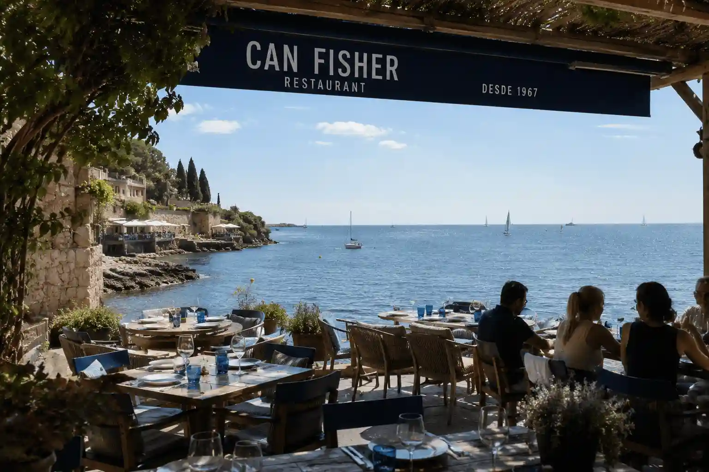
Face à la mer, ce restaurant est réputé pour ses poissons frais, ses fruits de mer et son emplacement privilégié sur la promenade de Barceloneta.
RéserverBarcelone est l'une des grandes capitales sportives d'Europe. Entre football, basket, handball et événements internationaux, la ville vibre toute l'année au rythme du sport.
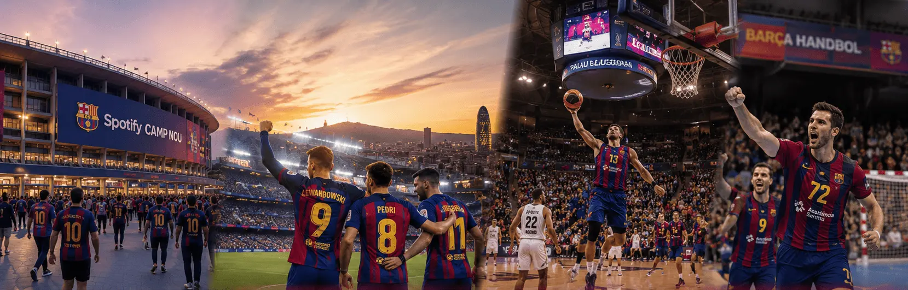
Découvre les coulisses de l'un des stades les plus célèbres du monde et plonge dans l'histoire du FC Barcelone grâce à la visite officielle du Camp Nou.
Visite officielleVivre un match du FC Barcelone reste l'une des expériences les plus marquantes pour tout amateur de football visitant la Catalogne.
RéserverL'un des clubs les plus prestigieux d'Europe avec des rencontres spectaculaires disputées au Palau Blaugrana tout au long de la saison.
Billetterie officielleLe Barça est une référence mondiale du handball et attire chaque saison les meilleurs clubs européens dans une ambiance exceptionnelle.
Billetterie officielleChaque quartier de Barcelone possède sa propre identité. Entre ruelles médiévales, places animées, cafés branchés et ambiance balnéaire, la capitale catalane se découvre aussi à travers ses différents quartiers.
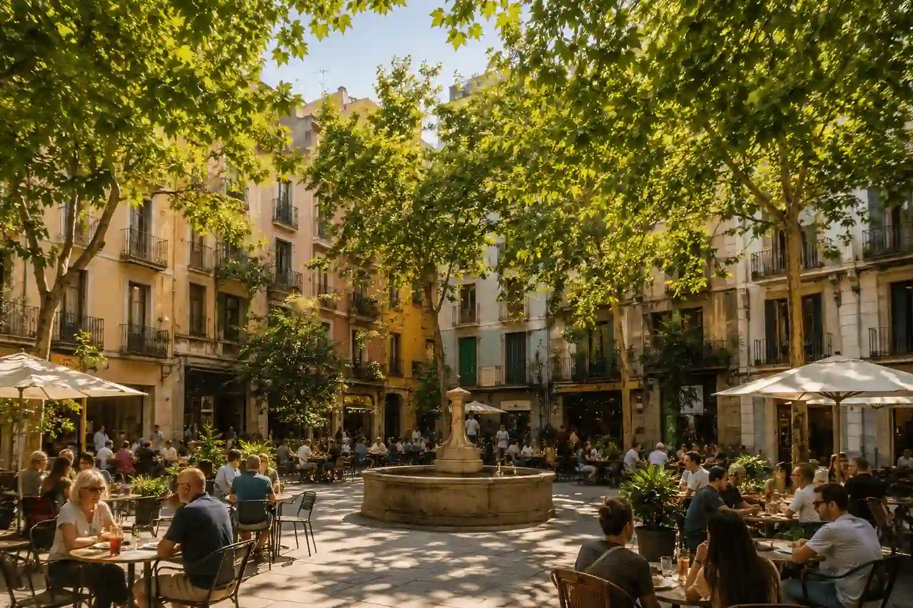
Le cœur historique de Barcelone. Ses ruelles médiévales, ses places cachées et son architecture préservée offrent une immersion unique dans l'histoire de la ville.
L'un des quartiers les plus vivants de Barcelone avec ses galeries, boutiques indépendantes, restaurants et son atmosphère bohème.
Ancien village devenu l'un des quartiers préférés des habitants. Places animées, terrasses et ambiance locale loin des zones les plus touristiques.
Entre plage, promenade maritime et restaurants de fruits de mer, Barceloneta offre l'ambiance méditerranéenne la plus emblématique de Barcelone.
Barcelone est une excellente base pour explorer la Catalogne. À moins de deux heures de route ou de train, découvre des plages spectaculaires, des villages méditerranéens, des montagnes emblématiques et certaines des plus belles villes d'Espagne.
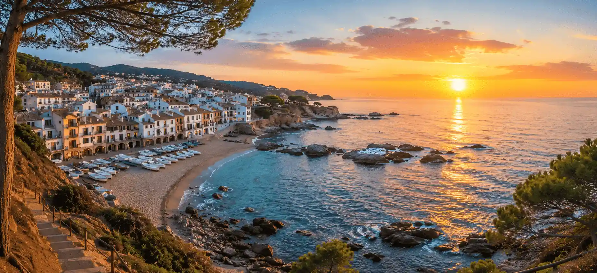
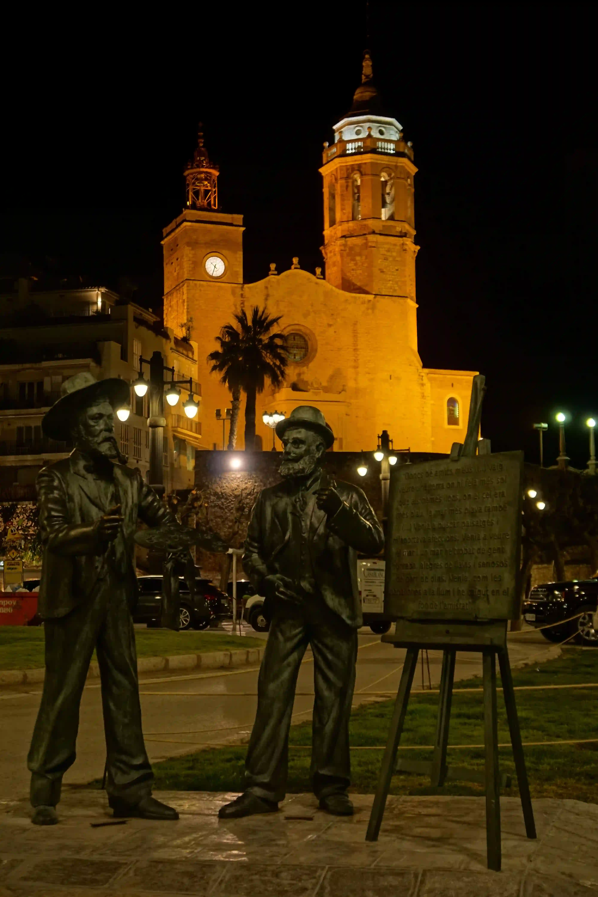
Découvre deux des plus belles destinations de Catalogne lors d'une excursion depuis Barcelone. Entre les vestiges romains de Tarragone et l'ambiance méditerranéenne de Sitges, cette journée offre un aperçu unique du patrimoine catalan.
Réserver l'excursion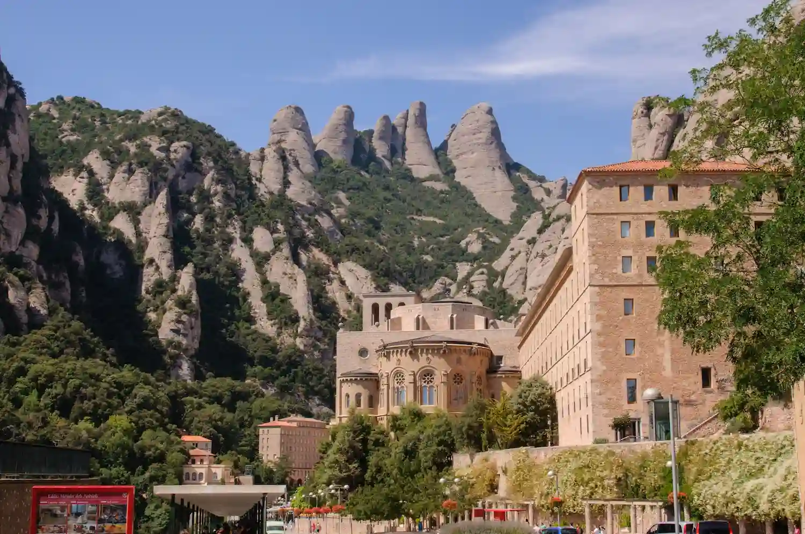
Découvre l'un des sites les plus emblématiques de Catalogne lors d'une excursion depuis Barcelone. Entre montagnes spectaculaires, monastère historique et panoramas exceptionnels, Montserrat est une visite incontournable.
Réserver l'excursion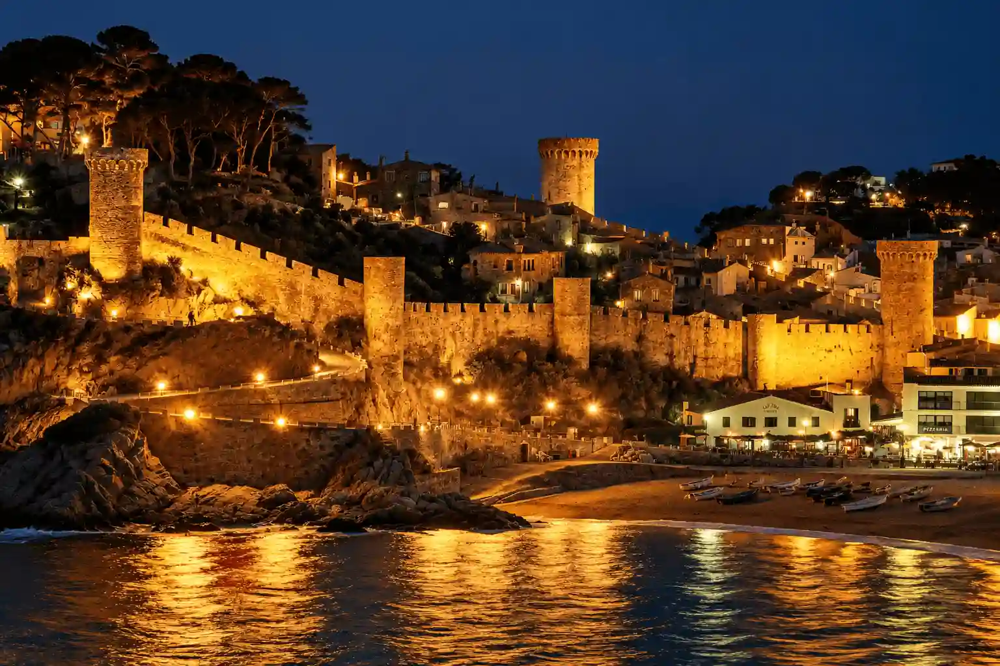
Entre remparts médiévaux, ruelles pavées et eaux turquoise, Tossa de Mar compte parmi les plus belles destinations de la Costa Brava et constitue une excursion incontournable depuis Barcelone.
Réserver l'excursionEntre collines, mer Méditerranée et architecture emblématique, Barcelone offre certains des plus beaux panoramas urbains d'Europe. Ces lieux permettent d'admirer la ville sous ses plus belles lumières.
Le panorama le plus célèbre de Barcelone. Une vue exceptionnelle sur toute la ville, particulièrement appréciée au coucher du soleil.
DécouvrirDécouvre cette expérience et profite d'une vue exceptionnelle sur Barcelone, son port et la Méditerranée depuis le téléphérique de Montjuïc.
Réserver le billetSurplombant Barcelone, le Tibidabo combine attractions historiques, vues panoramiques sur la ville et ambiance familiale dans l'un des lieux les plus emblématiques de Catalogne.
Réserver le billetEntre couchers de soleil sur la Méditerranée, rooftops élégants et promenades dans les ruelles historiques, Barcelone offre de nombreuses expériences à partager à deux.
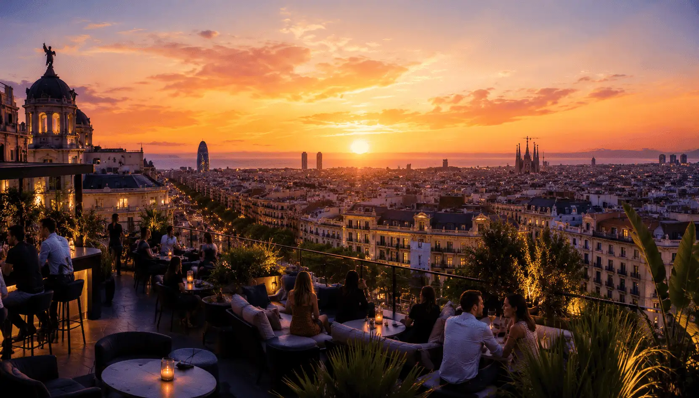
Profite d'un restaurant panoramique avec vue sur Barcelone et la mer Méditerranée.
Découvre Barcelone depuis la mer lors d'une sortie en catamaran au crépuscule.
Admire les lumières de Barcelone depuis les hauteurs de Montjuïc dans une ambiance unique.
Barcelone est bien plus qu'une destination balnéaire. Son patrimoine architectural, ses musées et ses monuments racontent l'histoire de la Catalogne et font de la ville l'une des capitales culturelles d'Europe.
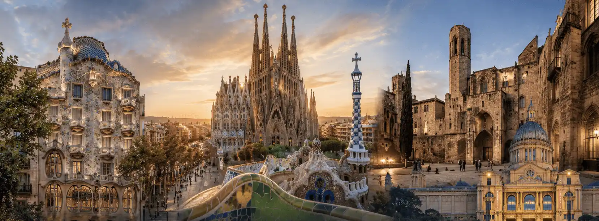
Installé dans le Palais National de Montjuïc, le MNAC abrite l'une des plus importantes collections d'art catalan au monde, du Moyen Âge à l'époque moderne.
DécouvrirSituée au cœur du Quartier Gothique, cette cathédrale impressionnante témoigne du riche passé médiéval de la ville.
DécouvrirL'un des musées les plus visités de Barcelone, consacré aux années de formation de Pablo Picasso et à son lien avec la Catalogne.
DécouvrirChef-d'œuvre du modernisme catalan, cette salle de concert est considérée comme l'un des plus beaux bâtiments de Barcelone.
DécouvrirBarcelone mélange architecture, plages, football, gastronomie espagnole et ambiance méditerranéenne unique.
Entre les œuvres de Gaudí, les rooftops, les plages catalanes et les quartiers historiques, Barcelone possède une atmosphère vibrante toute l’année.
Le métro et les transports catalans permettent d’explorer Barcelone rapidement.
Tapas, rooftops et restaurants méditerranéens sont présents dans toute la ville.
Sagrada Familia, Park Güell, Barceloneta et Camp Nou sont incontournables.
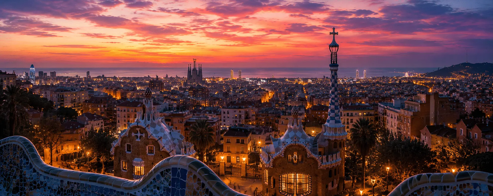